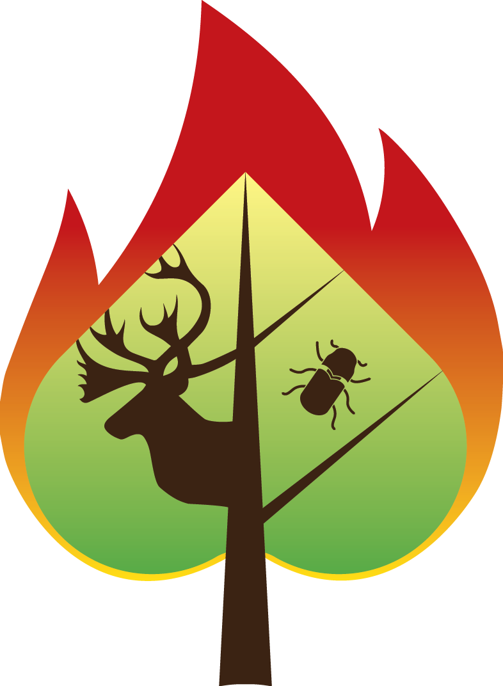

SpaDES.core packageR/spades-core-package.R
SpaDES.core-package.RdSpaDES.core is a framework for building spatial discrete-event systems
from re-usable modules. A simulation is held in a single simList object,
modules schedule events that change the simList, and the events run in
time order until the simulation ends.
Below is a categorized list of the functions you will use most often. Each entry is a short, plain-language description; click through for full details.
Bug reports: https://github.com/PredictiveEcology/SpaDES.core/issues
Module repository: https://github.com/PredictiveEcology/SpaDES-modules

simInit() | Set up a new simulation. |
simInit2() | Like simInit(), but takes all arguments as a single list. |
spades() | Run the simulation that simInit() set up. |
simInitAndSpades() | Convenience: simInit() then spades() in one call. |
simInitAndSpades2() | Like simInitAndSpades(), but takes all arguments as a single list. |
restartSpades() | Resume a simulation after an error or interruption. |
restartOrSimInitAndSpades() | Try to restart from a saved state; otherwise start fresh. |
Events are the building blocks of a simulation. Modules schedule events that run at a given time and may schedule further events.
scheduleEvent() | Schedule an event to run at a given simulation time. |
scheduleConditionalEvent() | Schedule an event that runs when a condition becomes TRUE. |
conditionalEvents() | List the conditional events currently waiting. |
doEvent() | Internal dispatcher; usually not called directly. |
defineEvent() | Define a new event type inside a module. |
simList objectThe simList holds everything about a simulation: parameters, modules,
the event queue, the simulation times, and all the data objects modules
read and write. Its objects live in an environment, so updates happen
in place rather than by copying.
| simList-class | The simList class definition. |
envir() | The environment that holds the simulation's objects. |
Copy() | Make a true (deep) copy of a simList. |
simList accessorsFunctions to read and write the various parts of a simList. All getters
have matching setters (e.g., params(sim) <- ...).
params() | All simulation parameters, as a nested list. |
P() | Get a parameter for the current module without naming it. |
globals() | Simulation-wide (global) parameters. |
paramCheckOtherMods() | Compare a parameter's value across modules. |
Where files are read from and written to.
paths() | All paths used by the simulation. |
getPaths(), setPaths() | Get or set all paths in one call. |
cachePath() | Where cached results are stored. |
modulePath() | Where modules are loaded from. |
inputPath() | Where input files are read from. |
outputPath() | Where output files are written. |
dataPath() | Where a module finds its data/ folder. |
figurePath() | Where figures are saved. |
logPath() | Where simulation logs are written. |
scratchPath() | Disposable working directory. |
rasterPath(), terraPath() | Temporary raster directories. |
time() | The current simulation time. |
start(), end() | Start and end times. |
times() | All times (current, start, end) at once. |
timeunit() | The time unit of the simulation (or of a module). |
timeunits() | The time units of all modules in the simulation. |
minTimeunit(), maxTimeunit() | The shortest and longest time unit in use. |
convertTimeunit() | Convert a number between time units. |
elapsedTime() | How much real time each module and event used. |
Helpers for writing durations: dsecond(), dmin(), dhour(), dday(),
dweek(), dmonth(), dyear().
events() | The queue of scheduled events. |
current() | The event being run right now. |
completed() | Events that have already run. |
objs() | All data objects in the simulation environment. |
ls(), objects() | Names of those objects (base R methods). |
ls.str() | Names plus a short summary of each object's structure. |
modules() | The modules loaded in this simulation. |
depends() | Each module's declared dependencies. |
packages() | R packages required by the modules. |
Every module declares its name, parameters, inputs and outputs using
these constructors, called inside defineModule().
defineModule() | Top-level metadata constructor. |
defineParameter() | Declare one parameter with a default. |
expectsInput() | Declare one input the module reads from sim. |
createsOutput() | Declare one output the module writes to sim. |
bindrows() | Combine the rows above into the metadata table. |
moduleMetadata() | The whole metadata block. |
moduleParams(), moduleInputs(), moduleOutputs() | Just one slice. |
moduleObjects() | All objects a module reads or writes. |
moduleVersion() | The declared version. |
| moduleDefaults | Default values used when metadata is missing. |
parameters(), inputObjects(), outputObjects() | Read these on a simList. |
citation(), documentation(), reqdPkgs() | Other metadata accessors. |
currentModule() | The name of the running module. |
suppliedElsewhere() | TRUE if another module already provides an object. |
checkObject() | Confirm a required object exists in sim. |
findObjects() | Look up objects across modules. |
newModule() | Create a new module from a template. |
newModuleCode(), newModuleDocumentation(), newModuleTests() | Generate individual parts of a module. |
copyModule() | Copy a module to a new location and (optionally) rename it. |
openModules() | Open one or more module files in the editor. |
zipModule() | Zip up a module for distribution. |
convertToPackage() | Turn a module into an installable R package. |
newProject() | Create a new project that contains modules. |
simInit() works out which modules depend on which. These functions
inspect that graph.
depsEdgeList() | Edge list of object dependencies between modules. |
depsGraph() | The same, as an igraph. |
moduleDiagram() | A simplified picture of which module feeds which. |
objectDiagram() | A detailed picture, by individual object. |
eventDiagram() | Gantt chart of events that ran in a completed simulation. |
Caching makes a workflow reproducible and skips re-running steps that
have not changed. Caching uses the reproducible package; SpaDES adds
shortcuts for caching at the spades, module, event, and function level.
reproducible::Cache() | Cache any function call. |
reproducible::showCache() | Inspect what is in the cache. |
reproducible::clearCache() | Remove cached entries. |
reproducible::keepCache() | Keep only the entries you name. |
Inside a module's metadata you can set the parameter .useCache to TRUE
(cache the whole module), a character vector (cache only those events),
or use .useCacheArgs to pin per-event arguments to reproducible::Cache().
See the caching vignette: vignette("iii-cache", package = "SpaDES.core").
Plotting goes through quickPlot::Plot(), which is optimised for fast
redraws within a simulation. SpaDES.core adds the Plots() wrapper that
lets a module choose at runtime whether to render to screen, a PNG file,
or no output at all.
Plots() | Module-friendly wrapper for any plotting function. |
anyPlotting() | TRUE if the current .plots setting will produce any output. |
SpaDES.core can statically check each module's code against the metadata:
every sim$x and parameter access is checked to be sure it matches the
declared inputs, outputs, and parameters. As of SpaDES.core 3.1.2.9014
these checks no longer run automatically during simInit() (the default of
spades.moduleCodeChecks is now FALSE); run them manually instead:
codeCheckModule() | Run the checks on a single module on disk (no simInit() needed). |
codeCheckModules() | Vectorized form: run on one or more modules (e.g. a whole project). |
Controlled by these options:
spades.moduleCodeChecks | Default FALSE (off). Set to TRUE (or a named list of toggles) to re-enable the in-simInit() checks. |
spades.codeCheckEngine | "v1" (default) or "v2" (new, structured output). |
saveSimList() | Save a simList to disk. |
loadSimList() | Load one back. |
zipSimList(), unzipSimList() | Save/load a simList together with its files. |
saveState() | Snapshot the state during a run. |
restartR() | Restart R (for example, to free memory) and continue. |
saveFiles(), loadFiles() | Save or load files described by outputs() / inputs(). |
checksums() | Verify (or write) checksums for a module's data files. |
memoryUse() | Memory used by each event in a finished simulation. |
memoryUseThisSession() | Memory used by the current R session. |
See vignette("iv-advanced", package = "SpaDES.core") for how to enable
the background sampler with options(spades.memoryUseInterval = ...).
getModuleVersion() | Get the latest version number on the repository. |
getSampleModules() | Copy the bundled sample modules somewhere usable. |
Three small modules in inst/sampleModules/, plus a module group that
loads all three:
randomLandscapes | Generates a SpatRaster stack of random landscape layers. |
fireSpread | Simulates fire ignition and spread on those layers. |
caribouMovement | Agent-based caribou movement (correlated random walk). |
SpaDES_sampleModules | Module group that loads all three. |
Get a copy with getSampleModules(tempdir()).
Many behaviours are configurable through R options (e.g., default paths,
how much output to print, code-checking, parallelism). See spadesOptions()
for the full list with defaults and descriptions; the defaults are also
returned as a named list by calling spadesOptions().